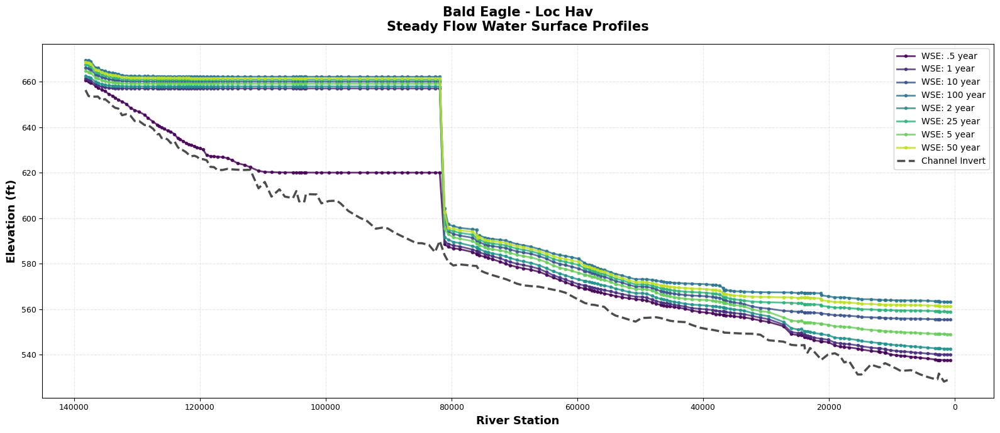
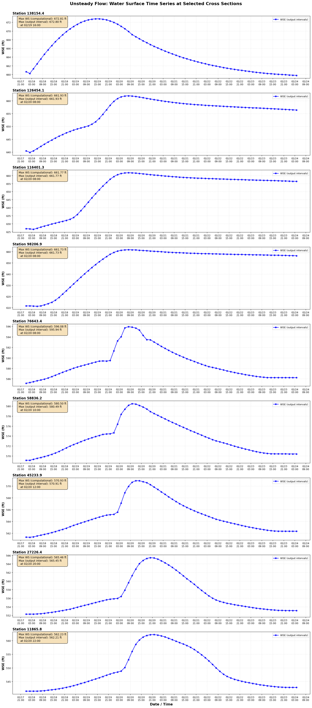

HECRASController Profiles¶
# =============================================================================
# DEVELOPMENT MODE TOGGLE
# =============================================================================
USE_LOCAL_SOURCE = False # <-- TOGGLE THIS
import sys
from pathlib import Path
if USE_LOCAL_SOURCE:
local_path = str(Path.cwd().parent)
if local_path not in sys.path:
sys.path.insert(0, local_path)
print(f"LOCAL SOURCE MODE: Loading from {local_path}/ras_commander")
else:
print("PIP PACKAGE MODE: Loading installed ras-commander")
# Import ras-commander
from ras_commander import RasCmdr, RasControl, RasExamples, RasPlan, init_ras_project, ras
# Additional imports for this notebook
import os
import pandas as pd
import matplotlib.pyplot as plt
import matplotlib.dates as mdates
import numpy as np
from IPython import display
# Verify which version loaded
import ras_commander
print(f"Loaded: {ras_commander.__file__}")
Parameters¶
Configure these values to customize the notebook for your project.
# =============================================================================
# PARAMETERS - Edit these to customize the notebook
# =============================================================================
from pathlib import Path
# Project Configuration
PROJECT_NAME = "Muncie" # Example project to extract
RAS_VERSION = "6.6" # HEC-RAS version (6.3, 6.5, 6.6, etc.)
# Output Configuration
OUTPUTS_DIR = Path("_outputs") / "121_legacy_hecrascontroller_and_rascontrol" # Artifacts saved here
# Create output directory
OUTPUTS_DIR.mkdir(parents=True, exist_ok=True)
print(f"Outputs will be saved to: {OUTPUTS_DIR.absolute()}")
Working with Legacy HEC-RAS Using RasControl¶
This notebook demonstrates RasControl, which provides a ras-commander style API for legacy HEC-RAS versions (3.x-4.x) using the HECRASController COM interface.
What is RasControl?¶
RasControl wraps the HECRASController COM API with ras-commander conventions:
- ✅ Use plan numbers -
RasControl.run_plan("02")not file paths - ✅ Integrated with ras object - Works with
init_ras_project() - ✅ Steady AND unsteady - Extract profiles and time series
- ✅ Auto-sets current plan - Just pass the plan number!
- ✅ No COM complexity - Clean public API
When to Use RasControl¶
| Use RasControl | Use HDF Methods |
|---|---|
| HEC-RAS 3.1, 4.1 | HEC-RAS 6.0+ |
| No HDF support | Modern versions |
| Legacy models | 2D mesh data |
| Version migration | Better performance |
Supported Versions¶
3.0, 3.1, 4.0, 4.1, 5.0-5.0.7, 6.0-6.7 Beta
Accepts: "4.1", "41", "5.0.6", "506", "6.6", "66", etc.
Setup¶
# ============================================================================
# PLOTTING CONFIGURATION
# ============================================================================
# Set better default plotting parameters
plt.rcParams['figure.dpi'] = 100
plt.rcParams['savefig.dpi'] = 300
plt.rcParams['font.size'] = 10
plt.rcParams['axes.labelsize'] = 11
plt.rcParams['axes.titlesize'] = 12
plt.rcParams['legend.fontsize'] = 9
plt.rcParams['xtick.labelsize'] = 9
plt.rcParams['ytick.labelsize'] = 9
import numpy as np # Add if not already imported
print("✓ Plotting configuration loaded")
✓ Plotting configuration loaded
Extract and Initialize Project¶
# Extract example project
project_path = RasExamples.extract_project("Balde Eagle Creek", suffix="17")
# Initialize project with HEC-RAS 6.6
init_ras_project(project_path, RAS_VERSION)
print(f"✓ Project initialized: {project_path}")
| plan_number | unsteady_number | geometry_number | Plan Title | Program Version | Short Identifier | Simulation Date | Computation Interval | Mapping Interval | Run HTab | ... | PS Cores | DSS File | Friction Slope Method | HDF_Results_Path | Geom File | Geom Path | Flow File | Flow Path | full_path | flow_type | |
|---|---|---|---|---|---|---|---|---|---|---|---|---|---|---|---|---|---|---|---|---|---|
| 0 | 01 | 02 | 01 | Unsteady with Bridges and Dam | 5.00 | UnsteadyFlow | 18FEB1999,0000,24FEB1999,0500 | 2MIN | 10MIN | 1 | ... | None | dss | 2 | None | 01 | C:\GH\ras-commander\examples\example_projects\... | 02 | C:\GH\ras-commander\examples\example_projects\... | C:\GH\ras-commander\examples\example_projects\... | Unsteady |
| 1 | 02 | None | 01 | Steady Flow Run | NaN | SteadyRun | 02/18/1999,0000,02/24/1999,0500 | 2MIN | NaN | 1 | ... | None | dss | 1 | None | 01 | C:\GH\ras-commander\examples\example_projects\... | 02 | C:\GH\ras-commander\examples\example_projects\... | C:\GH\ras-commander\examples\example_projects\... | Steady |
2 rows × 27 columns
Part 1: Steady State (Plan 02)¶
Extract steady profiles. Note: run_plan() automatically sets Plan 02 as current!
# =============================================================================
# Run Plan 02 (Steady Flow)
# =============================================================================
# Must run the plan before extracting results
print("Running Plan 02 (Steady Flow)...")
RasCmdr.compute_plan("02", num_cores=2)
print("✓ Plan 02 completed")
Extracting Computation Messages (Steady Flow)¶
After running the plan, we can extract detailed computation messages using RasControl.get_comp_msgs(). This method:
- Reads from .comp_msgs.txt or .computeMsgs.txt files (version-dependent)
- Falls back to HDF extraction if .txt files not available
- Returns detailed information about the computation process
# Extract computation messages for steady flow Plan 02
print("="*80)
print("COMPUTATION MESSAGES - Plan 02 (Steady Flow)")
print("="*80)
msgs_steady = RasControl.get_comp_msgs("02")
if msgs_steady:
print(f"\nExtracted {len(msgs_steady)} characters of computation messages\n")
# Display first 800 characters
print("Computation messages (first 800 characters):")
print("-" * 80)
print(msgs_steady[:800])
if len(msgs_steady) > 800:
print("\n... (truncated) ...")
else:
print("No computation messages available for Plan 02")
print("\n" + "="*80)
2025-11-17 14:05:51 - ras_commander.RasControl - WARNING - Computation messages .txt file not found (tried .comp_msgs.txt and .computeMsgs.txt), falling back to HDF extraction
2025-11-17 14:05:51 - ras_commander.HdfResultsPlan - INFO - Using existing Path object HDF file: C:\GH\ras-commander\examples\example_projects\Balde Eagle Creek\BaldEagle.p02.hdf
2025-11-17 14:05:51 - ras_commander.HdfResultsPlan - INFO - Final validated file path: C:\GH\ras-commander\examples\example_projects\Balde Eagle Creek\BaldEagle.p02.hdf
2025-11-17 14:05:51 - ras_commander.HdfResultsPlan - INFO - Reading computation messages from HDF: BaldEagle.p02.hdf
2025-11-17 14:05:51 - ras_commander.HdfResultsPlan - INFO - Successfully extracted 718 characters from HDF
2025-11-17 14:05:51 - ras_commander.RasControl - INFO - Successfully retrieved 718 characters from HDF
================================================================================
COMPUTATION MESSAGES - Plan 02 (Steady Flow)
================================================================================
Extracted 718 characters of computation messages
Computation messages (first 800 characters):
--------------------------------------------------------------------------------
Plan: 'Steady Flow Run' (BaldEagle.p02)
Simulation started at: 17Nov2025 02:05:47 PM
Writing Plan GIS Data...
Completed Writing Plan GIS Data
Writing Geometry...
Computing Bank Lines
Bank lines generated in 113 ms
Computing Edge Lines
Edge Lines generated in 57 ms
Computing XS Interpolation Surface
XS Interpolation Surface generated in 122 ms
Completed Writing Geometry
Writing Event Conditions ...
Completed Writing Event Condition Data
Steady Flow Simulation HEC-RAS 6.6 September 2024
Finished Steady Flow Simulation
Computations Summary
Computation Task Time(hh:mm:ss)
Completing Geometry, Flow and Plan 1
Steady Flow Computations 1
Complete Process 3
================================================================================
# Extract steady results (auto-sets Plan 02 as current)
df_steady = RasControl.get_steady_results("02")
print(f"Rows: {len(df_steady)}")
print(f"Profiles: {df_steady['profile'].nunique()}")
print(f"XS: {df_steady['node_id'].nunique()}")
df_steady.head(10)
2025-11-17 14:05:51 - ras_commander.RasControl - INFO - Opening HEC-RAS: RAS66.HECRASController (version: 6.6)
2025-11-17 14:05:51 - ras_commander.RasControl - INFO - Opening project: C:\GH\ras-commander\examples\example_projects\Balde Eagle Creek\BaldEagle.prj
2025-11-17 14:05:52 - ras_commander.RasControl - INFO - Detected ras.exe PID 385752 (confidence: 100/100)
2025-11-17 14:05:52 - ras_commander.RasControl - INFO - Executing operation...
2025-11-17 14:05:52 - ras_commander.RasControl - INFO - Setting current plan to: Steady Flow Run
2025-11-17 14:05:52 - ras_commander.RasControl - INFO - Found 8 profiles
2025-11-17 14:05:52 - ras_commander.RasControl - INFO - Found 1 rivers
2025-11-17 14:05:54 - ras_commander.RasControl - INFO - Extracted 1424 result rows
2025-11-17 14:05:54 - ras_commander.RasControl - INFO - Operation completed successfully
2025-11-17 14:05:54 - ras_commander.RasControl - INFO - Closing HEC-RAS...
2025-11-17 14:05:54 - ras_commander.RasControl - INFO - HEC-RAS closed via QuitRas()
2025-11-17 14:05:54 - ras_commander.RasControl - INFO - Terminating tracked ras.exe PID 385752
Rows: 1424
Profiles: 8
XS: 178
| river | reach | node_id | profile | wsel | min_ch_el | velocity | flow | froude | energy | max_depth | |
|---|---|---|---|---|---|---|---|---|---|---|---|
| 0 | Bald Eagle | Loc Hav | 138154.4 | .5 year | 660.588928 | 656.299988 | 3.657029 | 1.177402 | 0.363896 | 660.775635 | 4.288940 |
| 1 | Bald Eagle | Loc Hav | 138154.4 | 1 year | 661.432068 | 656.299988 | 3.888445 | 1.654405 | 0.358103 | 661.629578 | 5.132080 |
| 2 | Bald Eagle | Loc Hav | 138154.4 | 2 year | 662.602600 | 656.299988 | 4.519829 | 2.233629 | 0.365692 | 662.858398 | 6.302612 |
| 3 | Bald Eagle | Loc Hav | 138154.4 | 5 year | 664.673218 | 656.299988 | 5.791487 | 3.227041 | 0.396946 | 665.082153 | 8.373230 |
| 4 | Bald Eagle | Loc Hav | 138154.4 | 10 year | 666.190918 | 656.299988 | 6.828511 | 3.987156 | 0.426974 | 666.755981 | 9.890930 |
| 5 | Bald Eagle | Loc Hav | 138154.4 | 25 year | 667.459351 | 656.299988 | 7.730279 | 4.592227 | 0.449943 | 668.181274 | 11.159363 |
| 6 | Bald Eagle | Loc Hav | 138154.4 | 50 year | 668.543640 | 656.299988 | 8.564765 | 5.127679 | 0.471433 | 669.427612 | 12.243652 |
| 7 | Bald Eagle | Loc Hav | 138154.4 | 100 year | 669.521484 | 656.299988 | 9.320695 | 5.608300 | 0.490210 | 670.566101 | 13.221497 |
| 8 | Bald Eagle | Loc Hav | 137690.8 | .5 year | 659.914612 | 653.729980 | 3.339625 | 0.703524 | 0.282183 | 660.072205 | 6.184631 |
| 9 | Bald Eagle | Loc Hav | 137690.8 | 1 year | 660.849548 | 653.729980 | 3.501968 | 1.028502 | 0.274149 | 661.000366 | 7.119568 |
# ============================================================================
# STEADY FLOW: Longitudinal Profiles by River/Reach
# ============================================================================
# Convert node_id to float for proper sorting
df_steady['node_id'] = df_steady['node_id'].astype(float)
# Group by River/Reach and create separate plots
for (river, reach), group_df in df_steady.groupby(['river', 'reach']):
# Sort by station (descending - upstream to downstream per HEC-RAS convention)
group_df_sorted = group_df.sort_values('node_id', ascending=False)
fig, ax = plt.subplots(figsize=(16, 7))
# Get unique profiles and plot each one
profiles = sorted(group_df['profile'].unique())
colors = plt.cm.viridis(np.linspace(0, 0.9, len(profiles)))
for idx, profile in enumerate(profiles):
prof_data = group_df_sorted[group_df_sorted['profile'] == profile]
ax.plot(prof_data['node_id'], prof_data['wsel'],
marker='o', markersize=3, linewidth=2,
color=colors[idx], label=f'WSE: {profile}', alpha=0.8)
# Add channel invert (plot once, not for each profile)
invert = group_df_sorted.drop_duplicates('node_id')[['node_id', 'min_ch_el']].sort_values('node_id', ascending=False)
ax.plot(invert['node_id'], invert['min_ch_el'],
'k--', linewidth=2.5, alpha=0.7, label='Channel Invert')
# Formatting
ax.set_xlabel('River Station', fontsize=13, fontweight='bold')
ax.set_ylabel('Elevation (ft)', fontsize=13, fontweight='bold')
ax.set_title(f'{river} - {reach}\nSteady Flow Water Surface Profiles',
fontsize=15, fontweight='bold', pad=15)
ax.legend(loc='best', fontsize=10, framealpha=0.9)
ax.grid(True, alpha=0.3, linestyle='--')
ax.invert_xaxis() # Upstream (larger stations) on left
plt.tight_layout()
plt.show()
print(f"✓ Plotted {len(profiles)} profiles for {river} - {reach}")
print(f" Station range: {group_df['node_id'].min():.1f} to {group_df['node_id'].max():.1f}\n")

✓ Plotted 8 profiles for Bald Eagle - Loc Hav
Station range: 659.9 to 138154.4
# Export
Path("working").mkdir(exist_ok=True)
df_steady.to_csv("working/steady_plan02.csv", index=False)
print(f"Exported {len(df_steady)} rows to working/steady_plan02.csv")
Exported 1424 rows to working/steady_plan02.csv
Part 2: Unsteady Time Series (Plan 01)¶
Extract unsteady results. Note: Methods automatically set Plan 01 as current!
# Run Plan 01 (auto-sets as current, waits for completion)
# This may take 5-10 minutes!
print("Running Plan 01 (Unsteady)...")
# NOTE: Using RasCmdr.compute_plan() instead of RasControl.run_plan()
# because RasControl.run_plan() always sets cores to max
RasCmdr.compute_plan("01", clear_geompre=True, num_cores=2)
print("✓ Plan 01 completed")
# Get output times (auto-sets Plan 01 as current)
times = RasControl.get_output_times("01")
print(f"Found {len(times)} timesteps")
print(f"First: {times[0]}")
print(f"Last: {times[-1]}")
2025-11-17 14:07:31 - ras_commander.RasControl - INFO - Opening HEC-RAS: RAS66.HECRASController (version: 6.6)
2025-11-17 14:07:32 - ras_commander.RasControl - INFO - Opening project: C:\GH\ras-commander\examples\example_projects\Balde Eagle Creek\BaldEagle.prj
2025-11-17 14:07:32 - ras_commander.RasControl - INFO - Detected ras.exe PID 385348 (confidence: 100/100)
2025-11-17 14:07:32 - ras_commander.RasControl - INFO - Executing operation...
2025-11-17 14:07:32 - ras_commander.RasControl - INFO - Setting current plan to: Unsteady with Bridges and Dam
2025-11-17 14:07:32 - ras_commander.RasControl - INFO - Found 76 output times
2025-11-17 14:07:32 - ras_commander.RasControl - INFO - Operation completed successfully
2025-11-17 14:07:32 - ras_commander.RasControl - INFO - Closing HEC-RAS...
2025-11-17 14:07:32 - ras_commander.RasControl - INFO - HEC-RAS closed via QuitRas()
2025-11-17 14:07:32 - ras_commander.RasControl - INFO - Terminating tracked ras.exe PID 385348
Found 76 timesteps
First: Max WS
Last: 24FEB1999 0400
Extracting Computation Messages (Unsteady Flow)¶
Similarly, we can extract computation messages for the unsteady flow plan to review: - Simulation timing and performance - Convergence information - Any warnings or errors encountered during computation
# Extract computation messages for unsteady flow Plan 01
print("="*80)
print("COMPUTATION MESSAGES - Plan 01 (Unsteady Flow)")
print("="*80)
msgs_unsteady = RasControl.get_comp_msgs("01")
if msgs_unsteady:
print(f"\nExtracted {len(msgs_unsteady)} characters of computation messages\n")
# Display first 800 characters
print("Computation messages (first 800 characters):")
print("-" * 80)
print(msgs_unsteady[:800])
if len(msgs_unsteady) > 800:
print("\n... (truncated) ...")
# Check for errors/warnings
print("\n" + "="*80)
print("Checking for warnings/errors...")
print("="*80)
lines = msgs_unsteady.split('\n')
issues = [l for l in lines if 'error' in l.lower() or 'warning' in l.lower()]
if issues:
print(f"Found {len(issues)} warning/error lines:")
for issue in issues[:5]: # Show first 5
print(f" - {issue.strip()}")
else:
print("✓ No warnings or errors found")
else:
print("No computation messages available for Plan 01")
print("\n" + "="*80)
2025-11-17 14:07:32 - ras_commander.RasControl - INFO - Reading computation messages from: C:\GH\ras-commander\examples\example_projects\Balde Eagle Creek\BaldEagle.p01.comp_msgs.txt
2025-11-17 14:07:32 - ras_commander.RasControl - INFO - Read 1175 characters from comp_msgs file
================================================================================
COMPUTATION MESSAGES - Plan 01 (Unsteady Flow)
================================================================================
Extracted 1175 characters of computation messages
Computation messages (first 800 characters):
--------------------------------------------------------------------------------
User selected to use previously computed internal boundary data
but the geometry preprocessor file was for the previous version.
All internal boundary data will be recomputed.
Simulation started at: 14Nov2012 01:29 PM
Writing geometry to output file
Completed writing geometry to output file
Writing plan information to output file
Completed writing plan information to output file
Geometric Preprocessor Version 4.2.0 Jan 2010 XXX XXXX
Finished Processing Geometry
GeomPreprocessor complete - Accepting the preprocessor files.
Performing Unsteady Flow Simulation Version 4.2.0 Jan 2010 XXX XXXX
Maximum iterations of 20 at: RS WSEL ERROR
20FEB1999 12:44:00 Bald Eagle Loc Hav 75917.82 592.36 0.012
Finished Unsteady Flow Simulation
Writing Results to DSS
Finishe
... (truncated) ...
================================================================================
Checking for warnings/errors...
================================================================================
Found 1 warning/error lines:
- Maximum iterations of 20 at: RS WSEL ERROR
================================================================================
# Extract unsteady (limit to 10 timesteps for demo)
df_unsteady = RasControl.get_unsteady_results("01")
print(f"Rows: {len(df_unsteady)}")
print(f"Timesteps: {df_unsteady['time_index'].nunique()}")
print(f"XS: {df_unsteady['node_id'].nunique()}")
df_unsteady.head(10)
2025-11-17 14:07:32 - ras_commander.RasControl - INFO - Opening HEC-RAS: RAS66.HECRASController (version: 6.6)
2025-11-17 14:07:32 - ras_commander.RasControl - INFO - Opening project: C:\GH\ras-commander\examples\example_projects\Balde Eagle Creek\BaldEagle.prj
2025-11-17 14:07:33 - ras_commander.RasControl - INFO - Detected ras.exe PID 384072 (confidence: 100/100)
2025-11-17 14:07:33 - ras_commander.RasControl - INFO - Executing operation...
2025-11-17 14:07:33 - ras_commander.RasControl - INFO - Setting current plan to: Unsteady with Bridges and Dam
2025-11-17 14:07:33 - ras_commander.RasControl - INFO - Extracting 76 time steps
2025-11-17 14:07:33 - ras_commander.RasControl - INFO - Found 1 rivers
2025-11-17 14:08:04 - ras_commander.RasControl - INFO - Extracted 13528 result rows
2025-11-17 14:08:04 - ras_commander.RasControl - INFO - Operation completed successfully
2025-11-17 14:08:04 - ras_commander.RasControl - INFO - Closing HEC-RAS...
2025-11-17 14:08:04 - ras_commander.RasControl - INFO - HEC-RAS closed via QuitRas()
2025-11-17 14:08:04 - ras_commander.RasControl - INFO - Terminating tracked ras.exe PID 384072
Rows: 13528
Timesteps: 76
XS: 178
| river | reach | node_id | time_index | time_string | datetime | wsel | min_ch_el | velocity | flow | froude | energy | max_depth | |
|---|---|---|---|---|---|---|---|---|---|---|---|---|---|
| 0 | Bald Eagle | Loc Hav | 138154.4 | 1 | Max WS | NaT | 672.808289 | 656.299988 | 11.812529 | 7.167449 | 0.546461 | 674.472717 | 16.508301 |
| 1 | Bald Eagle | Loc Hav | 138154.4 | 2 | 18FEB1999 0000 | 1999-02-18 00:00:00 | 660.651123 | 656.299988 | 3.564320 | 1.161268 | 0.352355 | 660.827637 | 4.351135 |
| 2 | Bald Eagle | Loc Hav | 138154.4 | 3 | 18FEB1999 0200 | 1999-02-18 02:00:00 | 660.218872 | 656.299988 | 3.614365 | 1.002599 | 0.376157 | 660.407654 | 3.918884 |
| 3 | Bald Eagle | Loc Hav | 138154.4 | 4 | 18FEB1999 0400 | 1999-02-18 04:00:00 | 661.313293 | 656.299988 | 3.882611 | 1.605426 | 0.361649 | 661.511597 | 5.013306 |
| 4 | Bald Eagle | Loc Hav | 138154.4 | 5 | 18FEB1999 0600 | 1999-02-18 06:00:00 | 662.443420 | 656.299988 | 4.350002 | 2.118352 | 0.357496 | 662.681335 | 6.143433 |
| 5 | Bald Eagle | Loc Hav | 138154.4 | 6 | 18FEB1999 0800 | 1999-02-18 08:00:00 | 663.560730 | 656.299988 | 4.943125 | 2.614835 | 0.367609 | 663.861633 | 7.260742 |
| 6 | Bald Eagle | Loc Hav | 138154.4 | 7 | 18FEB1999 1000 | 1999-02-18 10:00:00 | 664.638428 | 656.299988 | 5.587611 | 3.109273 | 0.383870 | 665.019165 | 8.338440 |
| 7 | Bald Eagle | Loc Hav | 138154.4 | 8 | 18FEB1999 1200 | 1999-02-18 12:00:00 | 665.657776 | 656.299988 | 6.254566 | 3.600435 | 0.403054 | 666.132507 | 9.357788 |
| 8 | Bald Eagle | Loc Hav | 138154.4 | 9 | 18FEB1999 1400 | 1999-02-18 14:00:00 | 666.623291 | 656.299988 | 6.915609 | 4.074730 | 0.422223 | 667.202332 | 10.323303 |
| 9 | Bald Eagle | Loc Hav | 138154.4 | 10 | 18FEB1999 1600 | 1999-02-18 16:00:00 | 667.523621 | 656.299988 | 7.587838 | 4.510049 | 0.440113 | 668.219055 | 11.223633 |
Understanding "Max WS" in Unsteady Output¶
Important: HEC-RAS unsteady results include a special row with time_string="Max WS" (time_index=1). This contains the maximum values that occurred at ANY computational timestep during the entire simulation, not just at output intervals.
Why this matters: - Output intervals (e.g., every 1 hour) may miss the peak flow/WSE - Computational timesteps (e.g., every 30 seconds) capture the true maximum - "Max WS" shows the absolute peak, even if it wasn't saved to an output interval
How to use it: - Include in DataFrame for reference (critical data!) - Filter out when plotting time series (it's not a timestep) - Show as horizontal reference line on plots to indicate peak
The next cell demonstrates this pattern.
# ============================================================================
# UNSTEADY FLOW: Time Series at Multiple Cross Sections
# ============================================================================
# NOTE: This cell shows LEGACY manual datetime parsing for reference.
# For v0.81.0+, see the cell below for automatic datetime usage!
# ============================================================================
import matplotlib.dates as mdates
import numpy as np
# Convert node_id to float
df_unsteady['node_id'] = df_unsteady['node_id'].astype(float)
# Separate Max WS from timeseries data
df_maxws = df_unsteady[df_unsteady['time_string'] == 'Max WS'].copy()
df_timeseries = df_unsteady[df_unsteady['time_string'] != 'Max WS'].copy()
# LEGACY: Parse datetime for timeseries (NOT NEEDED in v0.81.0+ - datetime column auto-included!)
df_timeseries['datetime'] = pd.to_datetime(df_timeseries['time_string'],
format='%d%b%Y %H%M', errors='coerce')
# Select cross sections to plot (every 20th station for manageable plot count)
all_xs = sorted(df_timeseries['node_id'].unique(), reverse=True) # Upstream to downstream
selected_xs = all_xs[::20] # Adjust step size as needed (20, 30, etc.)
if len(selected_xs) == 0:
selected_xs = [all_xs[0]] # At least plot one
print(f"Creating time series plots for {len(selected_xs)} cross sections:")
print(f" Stations: {[f'{xs:.1f}' for xs in selected_xs]}\n")
# Create subplots - one per cross section
n_xs = len(selected_xs)
fig, axes = plt.subplots(n_xs, 1, figsize=(16, 4*n_xs))
if n_xs == 1:
axes = [axes]
for idx, xs in enumerate(selected_xs):
ax = axes[idx]
# Get data for this cross section
xs_data = df_timeseries[df_timeseries['node_id'] == xs].sort_values('datetime')
maxws_data = df_maxws[df_maxws['node_id'] == xs]
if len(xs_data) == 0:
ax.text(0.5, 0.5, f'No data for station {xs:.1f}',
ha='center', va='center', transform=ax.transAxes)
continue
# Plot WSE time series
ax.plot(xs_data['datetime'], xs_data['wsel'],
'b-o', linewidth=2, markersize=5, label='WSE (output intervals)',
alpha=0.8)
# Get max values
max_ws_value = maxws_data['wsel'].iloc[0] if len(maxws_data) > 0 else None
max_output_value = xs_data['wsel'].max()
max_output_time = xs_data.loc[xs_data['wsel'].idxmax(), 'datetime']
# Add horizontal line for computational Max WS
#if max_ws_value:
# ax.axhline(max_ws_value, color='r', linestyle='--',
# linewidth=2, alpha=0.7, label='Max WS (computational)')
# Create annotation text box
annotation_lines = [
f"Max WS (computational): {max_ws_value:.2f} ft" if max_ws_value else "Max WS: N/A",
f"Max (output interval): {max_output_value:.2f} ft",
f" at {max_output_time.strftime('%m/%d %H:%M')}" if pd.notna(max_output_time) else ""
]
annotation_text = '\n'.join(annotation_lines)
ax.text(0.02, 0.98, annotation_text,
transform=ax.transAxes, fontsize=10,
verticalalignment='top', horizontalalignment='left',
bbox=dict(boxstyle='round', facecolor='wheat', alpha=0.9, pad=0.5))
# Formatting
ax.set_ylabel('WSE (ft)', fontsize=11, fontweight='bold')
ax.set_title(f'Station {xs:.1f}', fontsize=12, fontweight='bold', loc='left')
ax.legend(loc='upper right', fontsize=9, framealpha=0.9)
ax.grid(True, alpha=0.3, linestyle='--')
# Format x-axis for dates
ax.xaxis.set_major_formatter(mdates.DateFormatter('%m/%d\n%H:%M'))
ax.xaxis.set_major_locator(mdates.HourLocator(interval=6)) # Adjust interval as needed
plt.setp(ax.xaxis.get_majorticklabels(), rotation=0, ha='center', fontsize=9)
# Add common x-label to bottom subplot
axes[-1].set_xlabel('Date / Time', fontsize=13, fontweight='bold')
plt.suptitle('Unsteady Flow: Water Surface Time Series at Selected Cross Sections',
fontsize=16, fontweight='bold', y=1.0)
plt.tight_layout()
plt.show()
print(f"\n✓ Created time series plots for {len(selected_xs)} stations")
Creating time series plots for 9 cross sections:
Stations: ['138154.4', '126454.1', '116401.3', '98206.9', '76643.4', '58836.2', '45233.9', '27226.4', '11865.8']

✓ Created time series plots for 9 stations
NEW in v0.81.0: Automatic Datetime Parsing¶
Starting in version 0.81.0, get_unsteady_results() automatically includes a datetime column with proper datetime64[ns] objects. Manual parsing is no longer needed!
Key Improvements:
- ✅ datetime column added automatically
- ✅ Already in datetime64[ns] format (not strings)
- ✅ "Max WS" rows have pd.NaT for clean filtering
- ✅ Immediate compatibility with pandas datetime operations
- ✅ Backward compatible - time_string still included
The cell above shows the old manual parsing method (kept for reference). The next cell demonstrates the modern approach using the automatic datetime column.
# ============================================================================
# MODERN APPROACH: Using Automatic datetime Column (v0.81.0+)
# ============================================================================
# Check that datetime column exists and is already parsed
print("DataFrame columns:")
print(df_unsteady.columns.tolist())
print(f"\ndatetime column type: {df_unsteady['datetime'].dtype}")
print(f"Sample datetime values:")
print(df_unsteady[['time_string', 'datetime']].head(10))
# Separate using datetime column (NaT for Max WS rows)
df_maxws_modern = df_unsteady[df_unsteady['datetime'].isna()].copy()
df_timeseries_modern = df_unsteady[df_unsteady['datetime'].notna()].copy()
print(f"\nMax WS rows: {len(df_maxws_modern)}")
print(f"Timeseries rows: {len(df_timeseries_modern)}")
# Use pandas datetime accessors directly - no manual parsing needed!
print("\nDatetime operations (no parsing required!):")
print(f" Simulation start: {df_timeseries_modern['datetime'].min()}")
print(f" Simulation end: {df_timeseries_modern['datetime'].max()}")
print(f" Duration: {df_timeseries_modern['datetime'].max() - df_timeseries_modern['datetime'].min()}")
print(f" Unique hours: {df_timeseries_modern['datetime'].dt.hour.unique()[:10]}")
# Time-based filtering (modern approach)
# Example: Get data for a specific date
specific_date = pd.Timestamp('1999-02-19')
feb_19_data = df_timeseries_modern[df_timeseries_modern['datetime'].dt.date == specific_date.date()]
print(f"\nData points on {specific_date.date()}: {len(feb_19_data)}")
# Example: Get data for specific time range
start_time = pd.Timestamp('1999-02-18 12:00:00')
end_time = pd.Timestamp('1999-02-20 12:00:00')
time_range_data = df_timeseries_modern[
(df_timeseries_modern['datetime'] >= start_time) &
(df_timeseries_modern['datetime'] <= end_time)
]
print(f"Data points between {start_time} and {end_time}: {len(time_range_data)}")
print("\n✓ Modern datetime functionality demonstrated")
DataFrame columns:
['river', 'reach', 'node_id', 'time_index', 'time_string', 'datetime', 'wsel', 'min_ch_el', 'velocity', 'flow', 'froude', 'energy', 'max_depth']
datetime column type: datetime64[ns]
Sample datetime values:
time_string datetime
0 Max WS NaT
1 18FEB1999 0000 1999-02-18 00:00:00
2 18FEB1999 0200 1999-02-18 02:00:00
3 18FEB1999 0400 1999-02-18 04:00:00
4 18FEB1999 0600 1999-02-18 06:00:00
5 18FEB1999 0800 1999-02-18 08:00:00
6 18FEB1999 1000 1999-02-18 10:00:00
7 18FEB1999 1200 1999-02-18 12:00:00
8 18FEB1999 1400 1999-02-18 14:00:00
9 18FEB1999 1600 1999-02-18 16:00:00
Max WS rows: 178
Timeseries rows: 13350
Datetime operations (no parsing required!):
Simulation start: 1999-02-18 00:00:00
Simulation end: 1999-02-24 04:00:00
Duration: 6 days 04:00:00
Unique hours: [ 0 2 4 6 8 10 12 14 16 18]
Data points on 1999-02-19: 2136
Data points between 1999-02-18 12:00:00 and 1999-02-20 12:00:00: 4450
✓ Modern datetime functionality demonstrated
# ============================================================================
# UNSTEADY FLOW: Maximum Water Surface Envelope
# ============================================================================
# Sort by station for profile view
max_wse_sorted = df_maxws.sort_values('node_id', ascending=False)
fig, ax = plt.subplots(figsize=(16, 7))
# Plot maximum WSE envelope
ax.plot(max_wse_sorted['node_id'], max_wse_sorted['wsel'],
'r-o', linewidth=2.5, markersize=5,
label='Max WS Envelope (peak at any computational timestep)',
alpha=0.8)
# Add channel invert
invert = max_wse_sorted[['node_id', 'min_ch_el']].drop_duplicates('node_id').sort_values('node_id', ascending=False)
ax.plot(invert['node_id'], invert['min_ch_el'],
'k--', linewidth=2.5, alpha=0.7, label='Channel Invert')
# Fill between for visual clarity
ax.fill_between(max_wse_sorted['node_id'],
max_wse_sorted['min_ch_el'],
max_wse_sorted['wsel'],
alpha=0.2, color='blue', label='Maximum Flow Depth')
# Formatting
ax.set_xlabel('River Station', fontsize=13, fontweight='bold')
ax.set_ylabel('Elevation (ft)', fontsize=13, fontweight='bold')
ax.set_title('Maximum Water Surface Envelope\n(Peak elevation reached at any computational timestep during simulation)',
fontsize=15, fontweight='bold', pad=15)
ax.legend(fontsize=11, loc='best', framealpha=0.9)
ax.grid(True, alpha=0.3, linestyle='--')
ax.invert_xaxis() # Upstream on left
plt.tight_layout()
plt.show()
# Print summary statistics
max_depth = (max_wse_sorted['wsel'] - max_wse_sorted['min_ch_el']).max()
max_depth_station = max_wse_sorted.loc[(max_wse_sorted['wsel'] - max_wse_sorted['min_ch_el']).idxmax(), 'node_id']
print(f"\n✓ Maximum Water Surface Envelope")
print(f" Max depth: {max_depth:.2f} ft at station {max_depth_station:.1f}")
print(f" Highest WSE: {max_wse_sorted['wsel'].max():.2f} ft at station {max_wse_sorted.loc[max_wse_sorted['wsel'].idxmax(), 'node_id']:.1f}")

✓ Maximum Water Surface Envelope
Max depth: 76.66 ft at station 82607.9
Highest WSE: 672.81 ft at station 138154.4
# ============================================================================
# UNSTEADY FLOW: Velocity Hydrographs at Key Locations
# ============================================================================
# Select critical stations (upstream, middle, downstream)
all_stations = sorted(df_timeseries['node_id'].unique(), reverse=True)
n_stations = len(all_stations)
if n_stations >= 3:
critical_xs = [
all_stations[0], # Upstream
all_stations[n_stations // 2], # Middle
all_stations[-1] # Downstream
]
labels = ['Upstream', 'Midstream', 'Downstream']
else:
critical_xs = all_stations
labels = [f'Station {i+1}' for i in range(len(critical_xs))]
fig, ax = plt.subplots(figsize=(14, 6))
colors = ['#1f77b4', '#ff7f0e', '#2ca02c']
# Plot velocity hydrographs
for idx, (xs, label) in enumerate(zip(critical_xs, labels)):
xs_data = df_timeseries[df_timeseries['node_id'] == xs].sort_values('datetime')
ax.plot(xs_data['datetime'], xs_data['velocity'],
marker='o', linewidth=2, markersize=5,
color=colors[idx % len(colors)],
label=f'{label} (Sta {xs:.1f})', alpha=0.8)
ax.set_xlabel('Date / Time', fontsize=13, fontweight='bold')
ax.set_ylabel('Velocity (ft/s)', fontsize=13, fontweight='bold')
ax.set_title('Velocity Hydrographs at Key Cross Sections',
fontsize=14, fontweight='bold')
ax.legend(fontsize=11, loc='best', framealpha=0.9)
ax.grid(True, alpha=0.3, linestyle='--')
ax.xaxis.set_major_formatter(mdates.DateFormatter('%m/%d\n%H:%M'))
plt.tight_layout()
plt.show()
print(f"\n✓ Created velocity hydrographs for {len(critical_xs)} key locations")

✓ Created velocity hydrographs for 3 key locations
Summary¶
Complete RasControl API¶
# Initialize with version (flexible formats)
init_ras_project(path, "4.1") # or "41", "66", "5.0.6", "506", etc.
# Run plans (auto-sets as current, waits for completion)
# NOTE: run_plan() now checks if plan is current before running
# If results are up-to-date, it skips computation (faster workflow)
success, msgs = RasControl.run_plan("02")
# To force recomputation regardless of current status:
success, msgs = RasControl.run_plan("02", force_recompute=True)
# Extract steady (auto-sets as current)
df_steady = RasControl.get_steady_results("02")
# Extract unsteady (auto-sets as current, includes Max WS)
df_unsteady = RasControl.get_unsteady_results("01")
# Filter for time series plotting
df_timeseries = df_unsteady[df_unsteady['time_string'] != 'Max WS']
max_wse = df_unsteady[df_unsteady['time_string'] == 'Max WS']['wsel'].iloc[0]
Key Features¶
- ✅ Plan numbers (not file paths)
- ✅ Auto-sets current plan
- ✅ Blocks until completion
- ✅ Steady AND unsteady
- ✅ All versions 3.0-6.7
- ✅ Flexible version formats
- ✅ Includes Max WS data
- ✅ Multi-version comparison (optional)
What Was Demonstrated¶
- Steady workflow - Plan 02 extraction and plotting
- Unsteady workflow - Plan 01 time series with Max WS reference
- Max WS handling - Understanding and visualizing peak values
- Multi-version comparison - Optional cells for version validation
Next Steps¶
- Apply to your legacy HEC-RAS models
- Run multi-version comparison for migration validation
- For HEC-RAS 6.0+: Use HDF methods for better performance
19_steady_flow_analysis.ipynb10_1d_hdf_data_extraction.ipynb
What This Creates¶
Running the multi-version comparison cells will:
New Plans in Project:
- 02_41, 02_506, 02_63, 02_66 (steady)
- 01_41, 01_506, 01_63, 01_66 (unsteady)
CSV Files in working/:
- steady_v41.csv, steady_v506.csv, steady_v63.csv, steady_v66.csv
- unsteady_v41.csv, unsteady_v506.csv, unsteady_v63.csv, unsteady_v66.csv
Results: - All plans remain in project for further analysis - CSV files for external comparison - Plots showing version differences
# =============================================================================
# OPTIONAL: Multi-version unsteady comparison (SKIP for automated testing)
# =============================================================================
# This cell runs multiple HEC-RAS versions and takes 1-2 hours.
# Set SKIP_MULTIVERSION = False to run the comparison.
# =============================================================================
SKIP_MULTIVERSION = True # Set to False to run optional multi-version comparisons
if SKIP_MULTIVERSION:
print("Skipping multi-version unsteady comparison (SKIP_MULTIVERSION=True)")
print("Set SKIP_MULTIVERSION = False in the cell above to run this analysis")
unsteady_results = {}
max_ws_data = {}
else:
from ras_commander import RasPlan
# Step 1: Update Plan 01 output intervals for more detail
print("Step 1: Updating Plan 01 intervals...")
init_ras_project(project_path, RAS_VERSION) # Use latest for modification
# Update intervals: Output=15MIN, Mapping=15MIN
RasPlan.update_plan_intervals("01",
output_interval="10MIN",
mapping_interval="10MIN")
print(" Output Interval: 1HOUR -> 6MIN")
print(" Mapping Interval: 1HOUR -> 6MIN\n")
# Step 2: Run across versions
# All versions with actual COM interfaces
test_versions = [
("4.1", "41"), # HEC-RAS 4.1 -> RAS41.HECRASController
# ("5.0.1", "501"), # HEC-RAS 5.0.1 -> RAS501.HECRASController >> FREEZES, SKIP, LIKELY ISSUE WITH HECRASCONTROLLER
# ("5.0.3", "503"), # HEC-RAS 5.0.3 -> RAS503.HECRASController
("5.0.4", "504"), # HEC-RAS 5.0.4 -> RAS504.HECRASController
("5.0.6", "506"), # HEC-RAS 5.0.6 -> RAS506.HECRASController
("6.3.1", "631"), # HEC-RAS 6.3.1 -> RAS631.HECRASController
("6.6", "66"), # HEC-RAS 6.6 -> RAS66.HECRASController
]
unsteady_results = {}
max_ws_data = {} # Store Max WS separately
print("=== MULTI-VERSION UNSTEADY COMPARISON ===\n")
for version_name, version_code in test_versions:
print(f"Processing HEC-RAS {version_name}...")
# Clone Plan 01 for this version
new_plan = RasPlan.clone_plan("01",
new_shortid=f"Unsteady_{version_code}",
new_title=f"Unsteady - v{version_name}")
print(f" Cloned to Plan {new_plan}")
# Re-initialize with this version
init_ras_project(project_path, version_name)
# Run the plan (this will take several minutes!)
print(f" Running Plan {new_plan} (may take 5-10 min)...")
# NOTE: Using force_recompute=True for fresh cloned plans to ensure computation
# (Default behavior now checks if plan is current and skips if already computed)
#success, msgs = RasControl.run_plan(new_plan, force_recompute=True)
success, msgs = RasControl.run_plan(new_plan, force_recompute=True)
print(success, msgs)
if success:
# Extract results (limit to 20 timesteps for comparison)
df = RasControl.get_unsteady_results(new_plan)
# Separate Max WS from timeseries
max_ws_data[version_name] = df[df['time_string'] == 'Max WS'].copy()
unsteady_results[version_name] = df[df['time_string'] != 'Max WS'].copy()
# Save CSV
csv_path = Path(f"working/unsteady_v{version_code}.csv")
df.to_csv(csv_path, index=False)
print(f" Extracted {len(df)} rows -> {csv_path}")
else:
print(f" Failed")
print()
# =============================================================================
# Plot multi-version unsteady comparison (if data available)
# =============================================================================
if unsteady_results:
# Gather all station IDs across versions
xs_set = set()
for df in unsteady_results.values():
try:
xs_set.update(df['node_id'].astype(float).unique().tolist())
except Exception:
xs_set.update(df['node_id'].unique().tolist())
all_xs = sorted(xs_set, reverse=True) # upstream -> downstream
if not all_xs:
print("No cross section data found in unsteady_results")
else:
# Select every 5th cross section for plotting (adjust step as needed)
step = 5
selected_xs = all_xs[::step] if len(all_xs) > step else all_xs
print(f"Plotting {len(selected_xs)} stations (every {step}th of {len(all_xs)} total)")
for xs_id in selected_xs:
fig, (ax1, ax2) = plt.subplots(2, 1, figsize=(14, 6))
# Plot WSE time series for each version at this station
for version, df in unsteady_results.items():
# FIX: Convert node_id to float for comparison
df_float = df.copy()
df_float['node_id'] = df_float['node_id'].astype(float)
xs_data = df_float[df_float['node_id'] == xs_id].sort_values('time_index')
if len(xs_data):
ax1.plot(xs_data['time_index'], xs_data['wsel'],
marker='o', label=f'v{version}', alpha=0.8)
# Add Max WS reference lines (if available) for this station
for version, df in max_ws_data.items():
try:
df_float = df.copy()
df_float['node_id'] = df_float['node_id'].astype(float)
max_row = df_float[df_float['node_id'] == xs_id]
if len(max_row):
max_wse = float(max_row['wsel'].iloc[0])
ax1.axhline(max_wse, linestyle='--', alpha=0.5, label=f'MaxWS v{version}')
except Exception:
continue
ax1.set_xlabel('Time Index', fontsize=11)
ax1.set_ylabel('Water Surface Elevation (ft)', fontsize=11)
ax1.set_title(f'WSE Time Series at {xs_id} - Version Comparison',
fontsize=13, fontweight='bold')
ax1.legend(fontsize=8)
ax1.grid(True, alpha=0.3)
# Plot Flow time series for each version at this station
for version, df in unsteady_results.items():
# FIX: Convert node_id to float for comparison
df_float = df.copy()
df_float['node_id'] = df_float['node_id'].astype(float)
xs_data = df_float[df_float['node_id'] == xs_id].sort_values('time_index')
if len(xs_data):
ax2.plot(xs_data['time_index'], xs_data['flow'],
marker='o', label=f'v{version}', alpha=0.8)
ax2.set_xlabel('Time Index', fontsize=11)
ax2.set_ylabel('Flow (cfs)', fontsize=11)
ax2.set_title(f'Flow Time Series at {xs_id} - Version Comparison',
fontsize=13, fontweight='bold')
ax2.legend(fontsize=8)
ax2.grid(True, alpha=0.3)
plt.tight_layout()
plt.show()
# Basic per-station stats
print(f"\nStation {xs_id}:")
for version, df in unsteady_results.items():
df_float = df.copy()
df_float['node_id'] = df_float['node_id'].astype(float)
xs_data = df_float[df_float['node_id'] == xs_id]
if len(xs_data):
print(f" v{version}: timesteps={len(xs_data)}, max_wse={xs_data['wsel'].max():.2f} ft")
else:
print(f" v{version}: no data")
# Summary of Max WS across versions for the first selected station (if any)
if selected_xs:
summary_xs = selected_xs[0]
print(f"\nMax WSE by version at station {summary_xs}:")
for version, df in max_ws_data.items():
try:
df_float = df.copy()
df_float['node_id'] = df_float['node_id'].astype(float)
max_row = df_float[df_float['node_id'] == summary_xs]
if len(max_row):
max_wse = float(max_row['wsel'].iloc[0])
print(f" v{version}: {max_wse:.2f} ft")
else:
print(f" v{version}: N/A")
except Exception:
print(f" v{version}: N/A")
else:
print("Skipping multi-version unsteady comparison plots (no data)")
print("Set SKIP_MULTIVERSION = False in cell above to run the analysis")
# =============================================================================
# OPTIONAL: Multi-version steady state comparison (SKIP for automated testing)
# =============================================================================
# This cell runs multiple HEC-RAS versions and can take 30+ minutes.
# Set SKIP_MULTIVERSION = False in cell 29 to run this comparison.
# =============================================================================
if SKIP_MULTIVERSION:
print("Skipping multi-version steady comparison (SKIP_MULTIVERSION=True)")
print("Set SKIP_MULTIVERSION = False in cell above to run this analysis")
steady_results = {}
else:
from ras_commander import RasPlan
# Versions to test - all versions with actual COM interfaces
test_versions = [
# ("4.1", "41"), # HEC-RAS 4.1 -> RAS41.HECRASController
# ("5.0.1", "501"), # HEC-RAS 5.0.1 -> RAS501.HECRASController
# ("5.0.3", "503"), # HEC-RAS 5.0.3 -> RAS503.HECRASController
("5.0.4", "504"), # HEC-RAS 5.0.4 -> RAS504.HECRASController
("5.0.6", "506"), # HEC-RAS 5.0.6 -> RAS506.HECRASController
("6.3.1", "631"), # HEC-RAS 6.3.1 -> RAS631.HECRASController
("6.6", "66"), # HEC-RAS 6.6 -> RAS66.HECRASController
]
steady_results = {}
print("=== MULTI-VERSION STEADY STATE COMPARISON ===\n")
for version_name, version_code in test_versions:
print(f"Processing HEC-RAS {version_name}...")
# Clone Plan 02 for this version
new_plan = RasPlan.clone_plan("02",
new_shortid=f"Steady_{version_code}",
new_title=f"Steady - v{version_name}")
print(f" Cloned to Plan {new_plan}")
# Re-initialize with this version
init_ras_project(project_path, version_name)
# Run the plan using ras-commander's compute_plan() instead of RasControl.run_plan
print(f" Running Plan {new_plan} with 2 cores...")
try:
# Use direct command line execution, preferred over RasControl.run_plan
#RasCmdr.compute_plan(new_plan, clear_geompre=True, num_cores=2)
success, msgs = RasControl.run_plan(new_plan, force_recompute=True)
print(success, msgs)
# Extract results
df = RasControl.get_steady_results(new_plan)
steady_results[version_name] = df
# Save CSV
csv_path = Path(f"working/steady_v{version_code}.csv")
df.to_csv(csv_path, index=False)
print(f" Extracted {len(df)} rows -> {csv_path}")
except Exception as e:
print(f" Failed: {e}")
print()
# Plot comparison - first profile from each version
if steady_results:
fig, ax = plt.subplots(figsize=(14, 7))
for version, df in steady_results.items():
first_prof = df[df['profile'] == df['profile'].iloc[0]]
ax.plot(range(len(first_prof)), first_prof['wsel'],
marker='o', label=f'v{version}', alpha=0.7)
ax.set_xlabel('Cross Section Index', fontsize=12)
ax.set_ylabel('Water Surface Elevation (ft)', fontsize=12)
ax.set_title('Steady State Profile - Multi-Version Comparison', fontsize=14, fontweight='bold')
ax.legend(fontsize=10)
ax.grid(True, alpha=0.3)
plt.tight_layout()
plt.show()
print(f"\nCompared {len(steady_results)} versions")
else:
print("No steady results to plot")